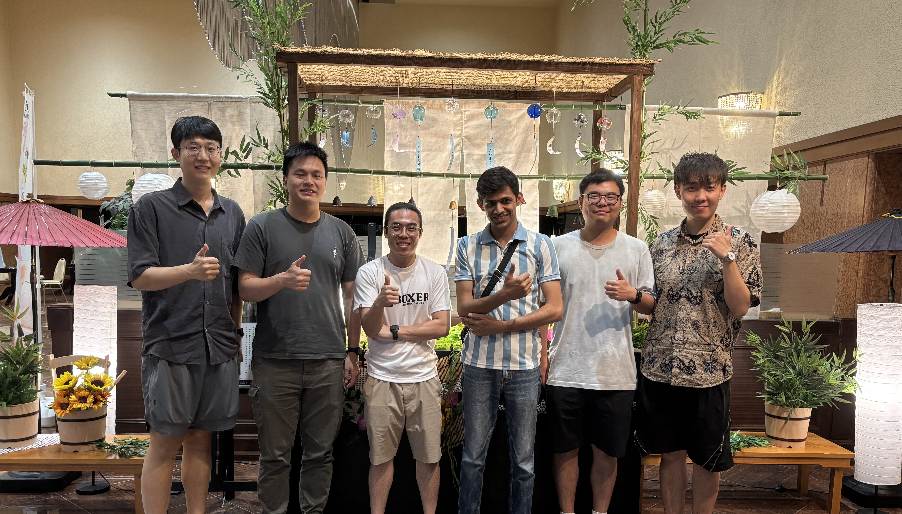

Hey there, I'm Tapasvi! I'm curious about everything from cold chain logistics to particle image velocimetry, and I change research fields almost as often as my playlists. I earned a dual degree in Mechanical Engineering and an M.Sc. in Chemistry from BITS Pilani, where I worked with Dr. Suvanjan Bhattacharyya on thermal system analysis. Now I'm pursuing my PhD in Mechanical and Aerospace Engineering at NTU Singapore with Prof. Eddie, focusing on phase-change materials and AI for vaccine cold chains. What's next? Honestly, I'm figuring it out as I go. Stay tuned!
I work with Python, C, ANSYS, COMSOL, and various open-source CFD platforms, while also exploring applications of AI/ML/Language models, and IoT in engineering and research workflows.
Music
Briefly trained in music during childhood and later picked up a few instruments along the way. While mostly self-taught, I enjoy singing and have performed informally during university events.
Chess
I play chess, mostly on lichess.org: where (due to being open-source) analyses are free and so am I. Catch me at my lichess profile! Eric Rosen is a nice guy.
Research
Different research areas which excite me. Especially PIV is my favourite.
Heat Transfer Enhancement
Vibration, Magnets
Particle Image Velocimetry
Flocking Models and Algos
Cold Chain Logistics
ML, IoT, Real-time
Projects
Projects that originated from a smattering of classes, hackathons, and the deep recesses of my brain.
Occasionally, I dabble in things that aren't strictly technical.
Music
Singing, Guitar, Acapella
Bike Rides
Night, Speed, Thrill
Teaching
HT, FM, M&M
The Story So Far...
The plot is always changing, so keep checking back in for updates!
2018
Joined BITS Pilani
Started engineering at BITS Pilani. Thought I'd crack JEE and life would be sorted. Classic mistake number one.
2019
Grade Crash
Grades started falling like my motivation during semester exams. Had to actually study for once. What a concept!
Summer 2020
Intern at Bharat Petroleum Corporation Limited
First real job at BPCL, Mumbai. Learned some machine learning and how oil refineries work. Mostly just tried not to press any wrong buttons.
2020-2022
Chairperson, ASME BITS Pilani
Somehow became chairperson of 35-40 people. Organized water rocket competitions and made ASME's first online global event happen. Good times during lockdown.
Fall 2021
Teaching Assistant
Teaching assistant for Mechanisms and Machines at BITS. This photo's from NTU where we did a skit instead of slides. I'm the one in the helmet, Mallar played the professor.
May-Jul 2022
Intern at JSW Energy Ltd
Summer internship at JSW Energy in Mumbai and Barmer. Worked on thermal power plants and boiler problems. Made some fancy presentations about saving money.
Nov-Dec 2023
Project Associate at IISc
Short stint at IISc Bangalore as project associate. Realized pretty quickly it wasn't for me. Sometimes you just gotta cut your losses and move on.
Jan 2024
Distinguished Scholar Award - Mechanical Engineering, University of Minnesota (UMN)
Received the Distinguished Scholar Award from the Mechanical Engineering Department, University of Minnesota Twin Cities (Minneapolis, USA).
Jan 2024
Cockrell School of Engineering Fellowship - Walker Department of Mechanical Engineering, UT Austin
Awarded the Cockrell School of Engineering Fellowship by the recommendation from the Walker Department of Mechanical Engineering, University of Texas at Austin (Austin, USA).
Jan 2024
First Time in Singapore
First time in Singapore with Abhishek Tyagi (he was at NVIDIA, now doing PhD at NUS). Two guys from India figuring out a new country. Airport was nice though.
2024-Present
PhD Student at NTU Singapore
Started PhD in Mechanical and Aerospace Engineering at NTU. Also working as peer tutor for Fluid Dynamics and Heat Transfer. Basically helping other students not fail.
Dec 2024
Chinese Media Coverage
Our research on thermal imaging for breast cancer detection got featured in Chinese media and TV. Pretty cool seeing your work outside academic papers. Link is here.
July 2025
Research Camp, Tokyo/Yamanaka
Research camp near Mount Fuji, University of Tokyo, Japan, working on a Smart 3-in-1 Plastic Separation Device for future recycling factories because someone’s gotta save the planet, right? Here are details and pictures. PS: If the link doesn't work, pls find this content in my Projects Section.
Backend engineering on Twitch's video networking team
I spent two years wrestling with the complexities of the Twitch video system and doing my best to contribute useful services where I can. Below are some brief summaries of the projects I worked on. Several details are omitted due to non-disclosure agreement.
Porting distributed locking system to AWS DynamoDB
In order to increase the redundancy of a service (details omitted), I had to port its distributed locking system from a third party service to AWS DynamoDB so that multiple entities could view the lock state of other entities around them. This required a deep understanding of how the system's locking actually worked, and writing rigorous tests to ensure that the overhaul was actually correct. To use a good phrase from a mentor of mine, I felt that this project bizarrely validated most traditional computer science undergraduate curricula.
My first project as a junior engineer was to build a service that detects abrupt drops in certain arenas of the video system's traffic. These drops are colloquially referred to as 'black holes', and the service is somewhat cheekily called LIGO. LIGO runs on AWS ECS/Fargate and connects to SQS, Kinesis, and Apache Druid. I architected, coded, and productionized the system entirely on my own, and gained a lot of experience on the journey.
Unequal cost multipathing, or UCMP, allows more efficient allocation of network traffic across the video system. I updated the previous algorithm (which implemented equal cost multipathing, UCMP's more inefficent predecessor) and worked with a colleague on the networking team to test the code live on the network. This project was yet another step in my journey to understand how exactly the internet works, something that I likely will never understand.
Data pipelining service for real-time estimated viewership on third party CDNs
As an intern in the summer of 2020, I was tasked with building a service to track the Twitch video system's usage of third party CDNs which output a graph showing how many users were routed to CDNs per minute. I got my first taste of assembling AWS services into a single working program, and utilized Kinesis, Lambda, and CloudWatch.
Designing and writing curriculum for a GANs textbook chapter
Kids growing up in the age of AI need accessible online platforms with which to learn advanced concepts that will broaden their understanding of the computerized ecosystem they live in. The goal of GenAI was to design such a platform for learners of all levels. We intended to create a prototype to hand off to professional designers.
Project:
GenAI Initiative
Timeline:
October 2019 - June 2020
Team:
Katherine Gallagher
The platform GenAI was intended to be an online textbook with several chapters about different AI topics, such as neural networks, conversational agents, and robotics, among several others. The chapter we decided to prototype with was the one about generative adversarial networks (GANs) due to the project lead's personal interest in them.
A great deal of time was spent on the interaction design of the website itself, and keeping both the landing pages and the learning material itself as easy to navigate as possible for learners and users of all ages and levels. For example, we determined that while the color scheme and design should remain the same throughout the website, the "feel" (font, UI) should change between content levels.
We also wanted to make AI seem approachable, not futuristic, dark, chrome colored, or hacker-y. We considered naturalistic themes and light colors in opposition to the typical depiction of AI in media.
At the beginning of the project, I worked along with another student in charge of web design to wireframe out the look and feel of the website. I went through several of the educational websites that I used on a daily basis and tried to pick out the elements that I found the most natural and usable, and then combine these into a design. The web designer took my fairly simple ideas and gave them a great deal of color.
My paper wireframes translated into web designs by Ryan S. (Tufts '21).
A paper prototype of how a user would progress through the site.
Halfway through the project, however, the web designer got too busy, and I was left with coming up with the visual design elements of the website as well. In accordance with our naturalistic ideas for representing AI, I chose a color palette, designed a v1 logo, and created a moodboard.
A colorful rainbow moodboard inspired by nature.
I was also assigned to write the beginner and intermediate levels of a GANs textbook chapter. This was the first time that I had to think deeply about what it meant to be a learner at each of these levels, and be mindful to use appropriate terminology and complexity. Similarly, we designed the visuals to "level up" as well.
The beginner, intermediate, and advanced pages respectively, complete with appropriately leveled visuals and content.
This project taught me a great deal about designing UI and thinking very deeply about my user. Though I had never dabbled in visual design before, I enjoyed the chance to determine how the site looked and felt, skills that proved extremely useful to designing this website!
Creating and maintaining AI education websites
Through my work with the MIT AI Education initiative, I've had a hand in creating a variety of websites for hosting our curricula and educational material. The sites are widely trafficked by educators worldwide.
Website for DoodleBot and associated educational material.
DoodleBot was the first website that I actually created mostly myself. I got my first actual exposure to HTML and learned how to make websites using github.io, an invaluable skill that has carried me far in life.
The (lovingly maintained) projects page of the AI Ed initiative site.
The MIT AI Education website is probably the most public facing and highly trafficked website that I'll work on for a long time. It houses the entirety of the MIT AI Education Initiative's resources, projects, publications, and fully tested curricula. This article that I helped write explains the initiative and its goals.
Creating this website was where I really honed my HTML and CSS skills, and learned how to run Javascript for interactivity as well. It's also the site that I'm the most emotionally attached, having committed 100+ times to the repo; my grad student and I were reluctant to let it be externally managed.
I'm mostly responsible for maintaining this site, but it's notable for being one of my first exposures to using the Jekyll framework, which came in handy for building this website! It was also my first experience with having educators contact me personally and ask for clarifications and fixes on curriculum material.
On their own, these websites were fairly small projects in the scope of things. However, tooling away on them gave me a much better feel for web dev and UI design that is coming in useful for this portfolio website in particular. The increase in my HTML/CSS skills has been, frankly, astronomical compared to where I started from. I used to find it insufferably frustrating, but now, working on these websites induces a sense of comfort and satisfaction in me similar to doing my laundry or cleaning my room. That feels like a huge improvement.
Bonus: A "painting" of the MIT dome created with GAN style transfer created for the Creative AI curriculum website, mostly notably for teaching me how to use sliders in HTML.
Redesigning Santa Monica Studio's engine debugging system
When creating a game as huge as God of War, designers do an almost unimaginable amount of tweaking and twiddling with different game engine properties to get the gameplay feeling just right. My task as an intern was to create a prototype for an updated engine debugging menu. Several details are omitted due to non-disclosure agreement.
Like many triple A game studios, Santa Monica Studio utilizes a custom built engine for God of War. As such, the tool for tweaking settings within said engine was also custom designed, and was over a decade old when I was tasked with creating a more modern prototype.
I was tasked with using the Dear ImGui library to create this prototype. ImGui is an open source C++ library for creating user interfaces, primarily for game engines and other real-time 3D applications.
This was my first time working with a codebase on a massive scale. I learned how to parse through huge chunks of relatively undocumented code, and gained an intuition for how to look for the code actually relevant to my needs. I had also never worked with an external library as big as ImGui, so figuring out how to integrate it into the existing PlayStation codebase was a slow task.
I also learned what it was like to have multiple stakeholders for a system. Designers, artists, and programmers all used the engine debugging tool in different ways, and had different opinions on the changes that should be made to it. From the way the PS4 controller was used to navigate the menu, to the actual widgets used for certain features themselves, I learned the importance of taking multiple voices into account when creating an end product for a variety of users.
The biggest challenge I faced was struggling through the nuances of C++. I learned that low-level programming is definitely not my forte, and the intricacies of buffer overflows and overwritten caches did not bring me much joy. But in the end, the experience of working in a triple A studio on such a huge project was worth all the frustration. As a small contributor, I'm excited for the world to see God of War: Ragnarok, and as a fan of the franchise, I'm dying to play it myself!
Prototyping and implementing features for an educational AR game
TaleBlazer is an augmented reality (AR) software platform developed by the MIT Scheller Teacher Education Program (STEP) Lab that allows users to play and make their own location-based mobile games in a browser-based block programming language. My task as an undergrad researcher was to prototype and add certain highly requested blocks to the web editor.
An important feature for AR games, which happen both in real locations and in real-time - is time! When I joined the TaleBlazer project, some of the most highly requested features from users were time-based event blocks, in which a user could trigger an event using elapsed time. My task was to brainstorm, prototype, and implement the best set of blocks for users to achieve this functionality.
I began with brainstorming a variety of time-based features that could come in handy in a location-based AR game:
Snippet of my first brainstorming session.
I then created paper prototypes and iterated upon them multiple times before finally moving on to implementation. The TaleBlazer backend is written in Javascript on top of a CakePHP backend. I primarily wrote Javascript in Android Studio, and built countless iterations of the app onto an old Android phone. The final result was that these three blocks were added to the TaleBlazer programming language:
My project for TaleBlazer was, in itself, relatively simple. However, this summer was absolutely instrumental to my growth as an engineer for several other reasons. I learned how to use Git, and managed, committed to, and pull requested branches with my chcanges. I learned the process of prototyping and adding user requested features, and learned how to go through several iterations of ideation. I learned how to adjust to different development environments, and code in languages that I had never encountered before. For all of these reasons, my summer at TaleBlazer will likely remain the most formative summer of my career.
Writing for a large online audience on the MIT Admissions blogs
From September 2017 to January 2021, I wrote 77 blog posts (an auspicious number in retrospect, given how much I love Final Fantasy VII) for the MIT Admissions website. The mission of the Admissions blogs is to paint a genuine, unedited picture of MIT life and culture to potential applicants.
Timeline:
September 2017 - January 2021
Mentor:
Chris Peterson
From September 2017 to January 2021, the MIT Admissions front page got just about 40 million pageviews with around 7 million unique users from all around the world. With my blog posts, I contributed to a small amount of those pageviews with a variety of different types of blog posts: compilations of MITculture, several enthusiasticposts about Spotify, and some minorly viraldatavisualizations. Compiling most of these posts helped me develop what I now consider to be a life skill: shamelessly asking large groups of people to provide me with similarly large amounts of data. At some point, I even had a salty MIT Confessions post written about just how shameless I was. However, I firmly believe that these experiences built character, and will serve me well in the working world. When I need to get something done, I'll get it done.
I had never written for such a large audience before, and it was both strange and gratifying to receive comments and emails from incoming students telling me how much my blogs resonated with them on different levels. Being told that my blogs were the reason that a student applied to MIT certainly ranks among the more touching experiences in my life. In the grand scheme of things, the impact of my blogs on the internet was quite small, but if they could change even a few people's life trajectories, then I think my quest as a writer has been fulfilled.
Bike Rides
’ve always been into bikes, honestly since Jaipur days. First one was a Hero Glamour, that 125cc. Not a crazy machine but it got me hooked. I still remember fiddling with the carb, checking plugs, learning the sound of the engine when it’s happy. Then came the Ignitor. That one felt like a step up, smoother gearbox, better pull, I used to ride it Jaipur to Pilani so many times. That bike had my heart. One day it just got stolen, and man, that hurt.
Now I’m in Singapore, riding a Honda CB190X Tourism. It’s got that liquid-cooled single, 190cc (ik it's not that fancy, but my license here limits me to 200cc, so that's the best deal I could get), fuel injection, enough power to keep me smiling but also comfy for longer runs. The upright stance feels right, suspension soaks the bumps better than my old rides. What I love most is late-night rides, streets empty, throttle response quick, wind hitting the helmet, engine humming steady.
I sometimes record as well, here's a sample:
Music
I started messing around with music pretty early on, learning harmonium and singing when I was just a kid. Then I kinda dropped it for a bit. Later, I got this huge Yamaha synth as a gift and from then on, I just kept dabbling with it whenever I could. Picked up guitar in College 1st year, learnt from Arjun Sir, in Jaipur (don't have a link to his profile, sorry!), that's all. Performed a bit here and there... I've got a couple of videos here below if you wanna see!
Performances (Public and Personal)
Here is me performing Despacito at BITS. My sidekick here is
Umang Jain.
Here is a sample of music videos which I record late at night, when I don't sleep.
The song: Labon Ko. I've added the guitar, the vocals and the beatboxing (weird) layers separately.
Honestly, I have hundreds of such videos/audios with guitar, keyboard, just vocals, and beatboxing attempts. I’ll update here when I find time.
Teaching
I’m passionate about teaching and engaging students in a way that makes complex concepts click. Over the years, I’ve had the privilege of teaching a range of engineering courses, from Mechanisms and Machines to Fluid Mechanics and Heat Transfer. I love creating an interactive classroom where students feel inspired to dive into the material alongside me. Below are some highlights of my teaching journey so far, and I’ll keep updating as I continue to teach!
My Teaching Adventures
Fall 2021: Mechanisms and Machines, BITS Pilani
Taught this course as a Teaching Assistant at BITS Pilani. Unfortunately, the recordings were lost, but the experience of breaking down mechanical concepts for students was unforgettable.
2021-2022: AutoCAD Sessions, BITS Pilani
Led some AutoCAD workshops. Majorly as a part of the M&M course.
Fall 2024: Fluid Mechanics, NTU Singapore
Taught in-person Fluid Mechanics sessions at NTU, focusing on interactive discussions and real-world applications to make the subject engaging and approachable.
Spring 2025: Heat Transfer, NTU Singapore
Delivered Heat Transfer lectures at NTU, emphasizing problem-solving and conceptual clarity to help students grasp thermal systems.
Fall 2025: Heat Transfer (Round Two), NTU Singapore
Back with Heat Transfer at NTU. Going all in to make it a party. Check the YouTube playlist for the Fall 2025 tutorials!
Teaching’s a wild ride, and I’m all in for it. More classroom tales coming as I keep dragging students into the engineering deep end!
EDC: Developing data science curriculum for high school sciences
I was a design collaborator for the Science+C initiative through the Educational Development Center. I designed a three day data science curriculum for integration into high school biology, chemistry, and physics classes. I ran workshops with educators and iterated using their feedback. The curriculum will be used by the State of Massachusetts.
Team:
Irene Lee (PI), Claire Bao, Grace Kim, Erica Zhou
The Science+C project is a collaboration between the Massachusetts Department of Elementary and Secondary Education to create an alternate pathway to college and science careers for high school students by developing and testing three new computational science courses. These courses—Computational Biology, Computational Chemistry, and Computational Physics—will be available to all Massachusetts high schools beginning in the 2022-2023 school year.
I specifically worked as a design collaborator on the Data Science + Machine Learning units. The units were divided into data science, decision trees, clustering algorithms, and neural networks. I designed the data science curriculum, a 3 day workshop with a lesson and associated activities for each day.
An early summary of the DS+ML units.
I created lesson plans designed to introduce beginners to data science at a low level. I cover the basics of data science and what data scientists to, and designed activities to teach summary statistics and visualization usage in an interactive manner.
An example of a lesson overview.Flowchart I designed to teach visualization usage.
Activities included:
An unplugged activity in which students provide their own data and organize themselves into a dataset to learn summary statistics.
An adapted memory game for matching certain situations to the data visualization that would be the most appropriate.
Multiple R programming activities written in Google CoLab that walk students through analyzing datasets relevant to their high school science class.
I ran this curriculum in a workshop with several high school science educators and iterated on the activities with them. Their feedback was invaluable for iterating and improving on the activities.
A CoLab activity analyzing the chosen dataset for biology, pre iteration with teachers.
Improvements the teachers suggested included abstracting out certain code chunks, highlighting the question at hand, and providing clear examples.
The curriculum will continue to go through iteration cycles until it pilots with schools across the state of Massachusetts in September 2022.
Streaming on Twitch
Myself, mostly obscured by my microphone, narrating Sephiroth's downfall in the Nibelheim basement.
After about a year working at Twitch, I decided that it was time to test out the service that I work on! I'm starting with streaming my very favorite game - Final Fantasy VII, if that wasn't obvious from the rest of this site - and I'm hoping to stream more of the classic Final Fantasies, playing guitar, and maybe - just maybe - myself applying to grad school. Reaching Partner status seems like a lofty goal, but I'd like to at least reach Affiliate.
Smart 3-in-1 Physical Separation Device for Plastic Recycling
At the University of Tokyo's International Research Camp in July 2025, nestled next to the scenic Yamanaka River with Mount Fuji as our backdrop, I joined 46 participants from ten universities across several countries. Our mission was ambitious: design an innovative device for future factories that could revolutionize plastic recycling.
Event:
University of Tokyo International Summer Research Camp
Our "Smart 3-in-1 Physical Separation Device" is a high-tech plastic sorting system that combines three physical separation methods—electrostatic, acoustic resonance, and electromagnetic (EM) fields—to achieve over 90-95% accuracy in separating mixed plastics. Unlike commercial systems that rely on Near-Infrared (NIR) or visible light spectra and struggle with dark or contaminated plastics, our device works effectively even in messy real-world conditions.
How it works:
1. Electrostatic Separation: Plastics get triboelectrically charged as they slide along the belt, then pass through a high-voltage electric field (~40 kV) where charge differences cause lateral deflection, achieving >95% sorting accuracy.
2. Acoustic Resonance Separation: Using ~40 Hz acoustic waves, plastics vibrate differently based on their stiffness (Young's modulus), allowing separation with ~90% accuracy through resonance amplitude variations.
3. Electromagnetic (EM) Separation: The breakthrough component. Pulsed EM fields at 60 kHz and 100 kHz target differential dielectric polarization dynamics. PVC, with chlorine atoms in its polymer chain, has higher dielectric loss and sticks to the belt longer at 100 kHz, while PET slides off, enabling >95% separation accuracy.
My primary contribution focused on the physics and system modeling for the electromagnetic module, tuning the pulsed field frequencies and stick-slip parameters to cleanly separate PET and PVC. I coordinated with external APAC collaborators to validate our models and developed comprehensive testing plans for handling dielectric polarization with ionic dynamics on a conveyor belt.
Impact and Specifications: Our prototype processes 50–1,500 kg/hour depending on configuration, with setup costs ranging from US$118k to 195k including maintenance. With global plastics use expected to nearly triple by 2060, this device addresses a critical need by boosting sorting accuracy, reducing contamination, and enabling smarter factories without sacrificing throughput.
After weeks of whiteboard equations, collaborative brainstorming, and late-night rapid prototyping, we created a working system that sorts plastics reliably, fast, and with minimal complexity. This isn't just academic curiosity—it's a stepping stone for circular economies, sustainable manufacturing, and a meaningful contribution to tackling global waste challenges.
NTU Team Experience: Special thanks to Prof. Yang Jianfei, who arranged this incredible opportunity for us NTU students and captured many memorable moments throughout the camp.

This experience not only resulted in an award-winning innovation but also strengthened international research collaborations and provided invaluable insights into sustainable technology development. The project represents a significant step forward in addressing one of our most pressing environmental challenges through engineering innovation.
Cold Chain Logistics, in Real Time
I'm passionate about revolutionizing cold chain logistics through cutting-edge technology. My research focuses on developing intelligent systems that ensure the integrity of temperature-sensitive products, from life-saving vaccines to perishable foods. By combining machine learning, IoT sensors, and advanced thermal modeling, I'm working to create a future where cold chain failures are predicted and prevented before they happen.
CRYOMOVE: The Future of Cold Chain Management
At the heart of my research is CRYOMOVE, a groundbreaking machine learning-based system that monitors and predicts Phase Change Material (PCM) behavior in real-time. This isn't just another monitoring system – it's a proactive guardian of cold chain integrity.
How CRYOMOVE Works:
AI-Powered Predictions: An Artificial Neural Network, trained on extensive ANSYS Fluent simulation data, accurately predicts PCM melt times based on live temperature readings
Real-Time Monitoring: Continuous temperature sensing provides instant feedback on cold chain status
Proactive Interventions: The system enables preventive action before temperature excursions occur, ensuring vaccine integrity
Cloud-Based Intelligence: Deployed on cloud platforms for scalable, accessible monitoring and dynamic decision-making
Versatile Applications: Beyond vaccines, the system adapts to food preservation and other perishable goods across industries
Experimental Breakthroughs
Theory meets reality in our comprehensive experimental validation program. We're not just simulating – we're building and testing real cold chain solutions.
Current Achievements:
Extended Performance: Successfully extended cold box performance to 6-7 days, nearly doubling the industry standard of 3-4 days
Advanced Materials Testing: Evaluating cutting-edge insulation foils and thermal paints for enhanced thermal protection
Environmental Control: Investigating the effects of humidifiers and desiccants on cold box performance
Glycerol-Modified PCMs: Developing enhanced phase change materials for superior thermal regulation
Future Innovations
The next frontier involves pushing the boundaries of what's possible in predictive cold chain management.
Advanced Neural Network Development:
Physics-Informed Neural Networks (PINNs): Integrating fundamental physical laws with machine learning for unprecedented accuracy
Recurrent Neural Networks (RNNs): Enhanced time-series forecasting for complex temperature patterns
Real-World Training Data: Incorporating diverse, realistic temperature profiles from various environmental conditions
Dynamic Environmental Integration:
The ultimate goal is a fully integrated system that considers:
Real-time traffic data affecting transport times
Weather conditions impacting thermal loads
Geographic mapping for route optimization
Dynamic environmental factors for predictive performance modeling
Impact Beyond Research
This work represents more than academic achievement – it's about saving lives and reducing waste. Every vaccine that maintains its potency, every batch of medicine that reaches patients safely, and every ton of food saved from spoilage represents real-world impact. CRYOMOVE is designed to scale from local clinics to global supply chains, ensuring that temperature-sensitive products maintain their integrity wherever they're needed.
The cold chain revolution is here, and it's powered by intelligent prediction, real-time monitoring, and proactive intervention. Welcome to the future of logistics.
Particle Image Velocimetry
Applied Particle Image Velocimetry (PIV) techniques to analyze emergent flocking patterns in biological systems using Vicsek models and cross-correlation algorithms. The research focused on quantifying collective motion dynamics in bird flocks, fish schools, and bacterial colonies.
Heat Transfer Enhancement
Okay, let’s talk about making things hot—well, technically, making them cool down faster. My research in heat transfer enhancement is all about squeezing every bit of efficiency out of systems like mini-channels, whether it’s for solar panels, electric vehicle batteries, or industrial heat exchangers. The secret sauce? Magnetic nanofluids, mechanical vibrations, and a sprinkle of magnetic fields to stir things up.
I’ve been geeking out over how nanoparticles suspended in fluids can supercharge heat transfer, especially when you shake things up—literally—with vibrations or apply a magnetic field to make those particles dance. For instance, we found that tweaking vibration frequency in a mini-channel can boost thermal performance by generating secondary flows that disrupt boring old boundary layers. Add a magnetic field, and the nanofluid starts behaving like it’s auditioning for a sci-fi movie, enhancing heat transfer coefficients like nobody’s business. This work has been a wild ride, from solar panel cooling to EV battery management, and it’s landed in journals like Results in Engineering and Numerical Heat Transfer.
Oh, and the exergy analysis? That’s where we get nerdy about energy quality, figuring out how to minimize waste in these systems. It’s like teaching a heat exchanger to be less of a slacker. Currently, we’re pushing the boundaries further, exploring how these techniques can make industrial systems greener and more efficient. Stay tuned—I’m probably in a lab right now, trying not to overheat myself while cooling something else.